Documentation d’OpenMaltForge
OpenMaltForge (anciennement OpenBrew, et BrewCraft avant la version 5.0.0) est une application de bureau de conception de recettes de bière : calcul de la densité, de l’amertume et de la couleur, eau et minéraux, process de brassage, coûts, stock et liste de courses, bibliothèque de recettes, étiquettes et feuille de brassage imprimables.
Démarrage
- Linux : installez le paquet
openmaltforge_<version>_amd64.deb(menu « OpenMaltForge ») ou lancez directement le programmeopenmaltforge_<version>_linux_amd64. - Windows : lancez
OpenMaltForge_<version>.exe. - macOS : décompressez
OpenMaltForge_<version>_macos_apple_silicon.zip(Mac M1, M2…) ou…_macos_intel.zip, glissezOpenMaltForge.appdans Applications ; au premier lancement, clic droit sur l’application puis « Ouvrir » (application non signée par Apple).
OpenMaltForge s’ouvre dans sa propre fenêtre (moteur du navigateur Chrome, Chromium, Edge ou Brave installé sur le poste).
Toutes les données sont enregistrées dans un seul fichier : ~/OpenMaltForge/openmaltforge.sqlite (dossier
personnel, sous-dossier OpenMaltForge). Au premier lancement, la base d’OpenBrew
(~/OpenBrew/openbrew.sqlite), sinon celle de BrewCraft (~/BrewCraft/brewcraft.sqlite), est reprise automatiquement, ou à défaut une base d’une version 3.x
(brewcraft_3.x.sqlite) ; l’ancien fichier n’est pas modifié.
À chaque lancement, OpenMaltForge s’ouvre sur l’écran Conception.
Une base neuve est remplie avec les données de départ : malts, houblons, levures, styles BJCP 2021, eaux, ingrédients, polices.
L’interface
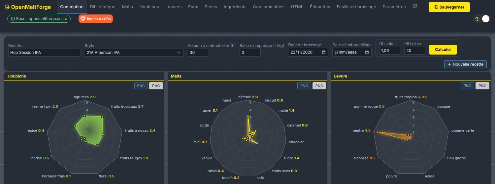
- Menu : Conception, Bibliothèque, les bases (Malts, Houblons, Levures, Eaux, Styles, Ingrédients, Consommables), HTML, Étiquettes, Feuille de brassage, Paramètres, puis l’icône Documentation (livre ouvert) qui affiche cette page.
- Sauvegarder : enregistre immédiatement toutes les données dans la base. Une sauvegarde automatique a lieu aussi (5 minutes par défaut, réglable dans Paramètres › Réglages).
- Voyant « Base : openmaltforge.sqlite » : vert quand tout est enregistré. En cas de problème (programme fermé, écriture refusée), un avertissement orange s’affiche ; un clic relance l’enregistrement.
- Zone de notifications (sous le menu) : messages temporaires en vert (enregistrement, calcul), erreurs en rouge, avertissements persistants en orange (par exemple un ratio d’empâtage trop élevé pour la cuve). Plusieurs messages s’affichent côte à côte.
- Thème : l’interrupteur soleil / lune, en haut à droite, passe du thème sombre au thème clair ; le choix est mémorisé.
- Pied de page : licence (GNU GPL v3, cliquer pour lire le texte) et numéro de version.
Conception d’une recette
L’écran Conception rassemble la recette en cours. Tout est recalculé à chaque saisie.
Un double-clic sur le titre d’une section la replie, elle seule : il ne reste que son titre, suivi d’un chevron qui signale qu’elle est repliée, et son trait jaune, sur la même largeur. Un double-clic sur le titre d’un radar (Houblons, Malts, Levure) replie toute la ligne des radars. Un nouveau double-clic déplie ; le choix est mémorisé.
Recette et cibles
- Recette, Style (styles BJCP 2021), Volume à embouteiller, Ratio d’empâtage (L/kg), dates de brassage et d’embouteillage.
- Dates :
- Date de brassage : vide dans une nouvelle recette (＋ Nouvelle recette). La saisir indique que la bière est brassée : les composants de la recette (malts, houblons, levures, ingrédients, consommables, eaux minérales) sont déduits du stock, une seule fois, et un message indique combien l’ont été, et la recette porte la coche verte « Réalisé » dans la Bibliothèque (liste et cartes) ; l’effacer remet les composants en stock et retire la coche. Elle sert aussi au numéro de brassin (
année#rang) des étiquettes et du HTML. Chaque changement de la date de brassage enregistre la recette automatiquement (Bibliothèque et base), comme le bouton Sauvegarder. - Date d’embouteillage : la renseigner fait apparaître la section Analyse organoleptique du brassin ; le HTML indique la date d’embouteillage et l’analyse. Elle ne touche ni au stock ni à la coche « Réalisé ». Elle ne peut pas être antérieure à la date de brassage : une telle saisie est refusée (message en rouge) et l’ancienne valeur est rétablie ; de même, la date de brassage ne peut pas dépasser la date d’embouteillage.
- Date de brassage : vide dans une nouvelle recette (＋ Nouvelle recette). La saisir indique que la bière est brassée : les composants de la recette (malts, houblons, levures, ingrédients, consommables, eaux minérales) sont déduits du stock, une seule fois, et un message indique combien l’ont été, et la recette porte la coche verte « Réalisé » dans la Bibliothèque (liste et cartes) ; l’effacer remet les composants en stock et retire la coche. Elle sert aussi au numéro de brassin (
- DI cible, IBU cible et bouton Calculer : ajustent la recette pour atteindre la densité initiale et l’amertume voulues, sans changer sa composition.
- Les cibles : DI cible = densité initiale visée (ex.
1,060) ; IBU cible = amertume visée en IBU (ex.25). Une nouvelle recette les reprend des Valeurs par défaut des Paramètres (« DI cible par défaut », « IBU cible par défaut »). Quand vous modifiez l’une d’elles, le curseur correspondant du bilan se place aussitôt sur la nouvelle cible, et la recette est recalculée (comme avec Calculer) dès que vous relâchez les flèches du champ, appuyez sur Entrée ou quittez le champ. Le tableau Process les utilise aussi (la DI cible fixe la densité après la glace). - Avant le calcul : si vous avez saisi les malts ou les houblons en pourcentages et que leur total n’est pas 100 %, une fenêtre propose de les ramener à 100 % (règle de trois) ; si vous refusez, rien n’est calculé.
- 1. Les malts : OpenMaltForge calcule la DI de la recette à partir du poids de chaque malt, de son potentiel (base Malts), du rendement de l’équipement et du volume à embouteiller. Tous les malts sont multipliés par un même facteur = (DI cible − 1) ÷ (DI actuelle − 1). Les proportions entre malts ne changent pas, donc ni la couleur relative ni le caractère de la recette.
- 2. Les houblons : avec la nouvelle DI, l’amertume est recalculée (formule de Tinseth, multipliée par le coefficient de l’usage : First Wort, Ébullition, Whirlpool, Hopstand, Dry hop — Paramètres › Coefficients d’utilisation des houblons). Tous les houblons dont le coefficient n’est pas nul sont multipliés par un même facteur = IBU cible ÷ IBU actuels. Pour qu’un usage ne bouge pas (par exemple le dry hop), mettez son coefficient à 0.
- Exemple : 5 kg de malts donnent une DI de 1,050 et 40 g de houblon 20 IBU ; avec une DI cible de 1,060 et 25 IBU cibles, les malts passent à 6 kg (× 60/50 = × 1,2), puis les houblons sont ajustés pour 25 IBU à la nouvelle densité.
- Après le calcul : les poids sont arrondis (au gramme pour les malts, au dixième de gramme pour les houblons) et les pourcentages repassent en mode poids. Le bilan de la recette, les coûts et le Process sont recalculés, la recette est enregistrée, et une notification verte rappelle la DI et les IBU visés. Les quantités déjà présentes dans la liste de courses ne changent pas (elles sont figées) : un triangle orange signale celles qui deviennent insuffisantes.
- Messages d’erreur (en rouge) : cibles vides ; DI hors de 1,010 à 1,200 ou IBU nuls ; aucun malt reconnu dans la base (ou poids nul) ; aucun houblon contributif (nom inconnu, poids ou temps nul, ou tous les usages à coefficient 0). Dans ces cas, la recette n’est pas modifiée.
- Les cibles : DI cible = densité initiale visée (ex.
- ＋ Nouvelle recette : crée une nouvelle recette ; les cibles et le ratio reprennent les valeurs par défaut des Paramètres et la liste de courses est vidée. Les tableaux sont remplis au hasard depuis vos bases : un malt de base (EBC ≤ 10) et deux autres malts, deux houblons (amérisant 60 min, aromatique 10 min) et une levure ; les quantités sont ensuite ajustées aux cibles (DI, IBU) comme avec le bouton Calculer. La date de brassage reste vide.
- Radars aromatiques des malts, houblons et levures : profil de la recette, valeur affichée au survol d’un point, agrandissement au clic (Échap pour fermer), export en image avec les boutons PNG (fond sombre ou clair).
Malts, houblons, levures
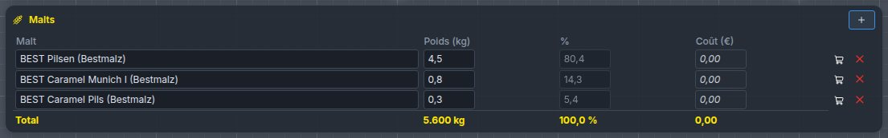
- Le bouton ＋ du titre ajoute une ligne ; la croix rouge la supprime.
- Nom : tapez au moins 3 lettres pour choisir dans la base (le maltier est indiqué après le nom des malts).
- Poids ou pourcentage : saisissez les poids, ou les pourcentages (le poids est alors calculé ; ressaisir un poids repasse en mode poids).
- Houblons : poids, usage (First Wort, Ébullition, Whirlpool, Hopstand, Dry hop) et durée ; les IBU sont calculés par la formule de Tinseth, pondérée par les coefficients d’utilisation des Paramètres.
- Levures : nombre de sachets, atténuation et floculation de la souche.
- Caddie en fin de ligne : ajoute le composant à la liste de courses (voir Liste de courses). Il est orange quand le stock ne suffit pas, vert quand le composant est déjà dans la liste.
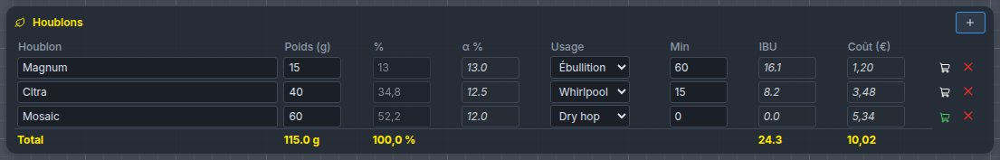
Eau et minéraux
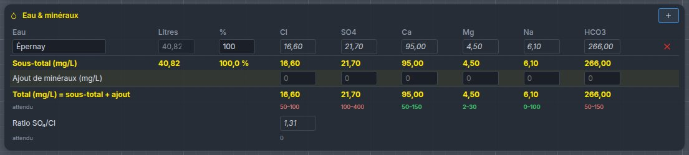
- Choisissez une ou plusieurs eaux (base « Eaux ») et leur part, en litres ou en pourcentage.
- Les ions (Cl, SO4, Ca, Mg, Na, HCO3) du mélange sont comparés aux plages du style ; la ligne d’ajouts (mg/L) calcule les quantités de minéraux, ajoutées automatiquement aux ingrédients de la recette (lignes « — auto »).
Ingrédients et consommables
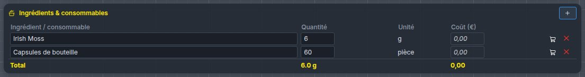
Paliers, quantités d’eau, resucrage
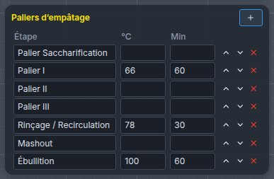
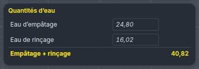
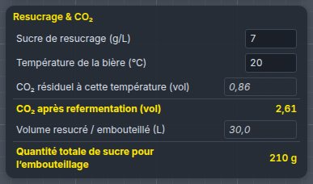
Bilan de la recette et coûts
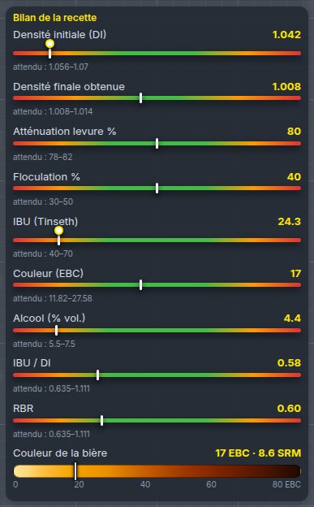
Densité initiale, IBU (juste dessous, les deux curseurs déplaçables), densité finale, atténuation, floculation, couleur (EBC / SRM), alcool, rapports IBU / DI et RBR, avec la plage attendue pour le style choisi, puis la couleur estimée de la bière.
Curseurs déplaçables : les curseurs DI et IBU ont une petite poignée ronde au-dessus. Glissez-la avec la souris : la DI cible ou l’IBU cible varie comme la valeur du curseur (le champ suit en direct) ; au relâchement, la recette est recalculée comme avec le bouton Calculer et le curseur reste où vous l’avez lâché. Les autres curseurs sont des indicateurs, ils ne se déplacent pas.
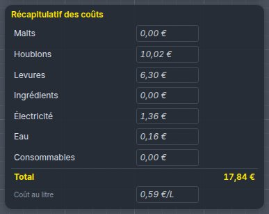
Analyse organoleptique
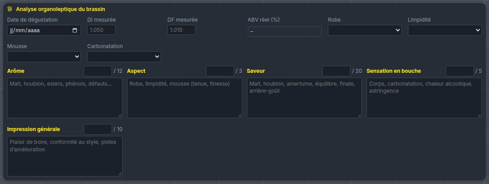
Date de dégustation, densités mesurées, ABV réel, robe, limpidité, mousse, carbonatation, puis notes et commentaires par critère (arôme, aspect, saveur, en bouche, impression générale).
Saisie d’expressions mathématiques
Dans n’importe quel champ de saisie, un texte qui commence par = est calculé. Le résultat remplace la formule quand vous validez avec Entrée ou en quittant le champ, et il est pris en compte comme une saisie normale.
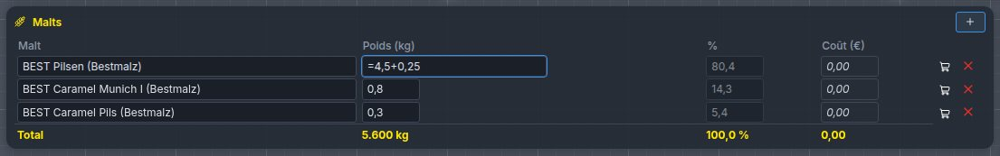
=4,5+0,25 dans le poids (kg) du premier malt…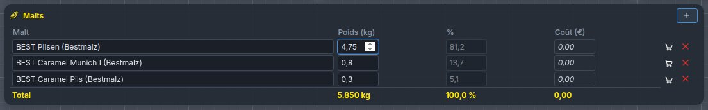
| Élément | Écriture | Exemple | Résultat |
|---|---|---|---|
| Addition, soustraction | + - | =4,5+0,25 | 4,75 |
| Multiplication, division | * ou ×, / ou ÷ | =3*(2+1,5)/4 | 2,625 |
| Puissance | ^ | =2^10 | 1024 |
| Parenthèses | ( ) | =(20-12)*1,5 | 12 |
| Pourcentage | % après un nombre (÷ 100) | =30*85% | 25,5 |
| Racine carrée | sqrt( ) | =sqrt(16) | 4 |
| Valeur absolue | abs( ) | =abs(12-20) | 8 |
| Arrondi | round( ) | =round(40/3) | 13 |
| Nombre négatif | - devant | =-2+5 | 3 |
- La virgule ou le point servent de séparateur décimal (
4,5=4.5) ; les espaces sont ignorés. - Priorités habituelles : parenthèses, puis puissance, puis multiplication et division, puis addition et soustraction.
- Dans un champ numérique, la touche = (ou un collage qui commence par
=) bascule le champ en saisie de texte le temps de la formule. - Une formule invalide (parenthèse manquante, division par zéro…) n’est pas appliquée : le champ clignote en rouge et son infobulle indique « Formule invalide ».
- Le résultat est arrondi à 12 chiffres significatifs.
=5,6*80%), convertir 12 oz en grammes (=12*28,35), compléter un volume (=30-4,2-1,5).Liste de courses et stock
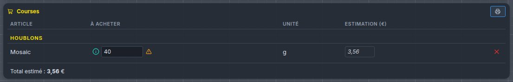
Ajout automatique
- Un malt, houblon, levure, ingrédient, consommable ou une eau minérale utilisé dans la recette en cours entre dans la liste dès que la recette épuise son stock (quantité demandée ≥ stock) ; la quantité proposée est ce qui manque (ou la quantité utilisée quand le stock tombe juste à zéro). Pour les eaux, ce sont les litres de chaque eau minérale du mélange ; les eaux de ville ne sont jamais ajoutées.
- Il en sort automatiquement dès que le stock suffit de nouveau (par exemple en diminuant la quantité dans la recette).
- Quantités figées : une fois un article dans la liste, sa quantité ne change plus d’elle-même (bouton « Calculer », modification d’une ligne…). Si elle devient inférieure à ce qui manque, un triangle orange apparaît à côté de la quantité (son infobulle indique ce qui manque) et une notification orange signale les articles concernés ; corrigez la quantité pour les faire disparaître.
- Les composants non utilisés par la recette ne sont jamais ajoutés, même avec un stock à zéro.
- ＋ Nouvelle recette vide la liste de courses (ajouts manuels compris) ; elle se remplit ensuite d’après la nouvelle recette.
- Composant retiré de la recette : quand vous supprimez un composant de la recette (ou le remplacez par un autre), il sort aussi de la liste de courses — y compris le malt, le houblon et la levure proposés par défaut dans une nouvelle recette, et un article ajouté par le caddie de la recette. Seuls restent les articles ajoutés depuis les écrans de base (Malts, Houblons…).
Ajout manuel
- Caddie en fin de ligne de la recette : ajoute le composant s’il n’est pas déjà dans la liste (quantité manquante, sinon quantité utilisée par la recette).
- Caddie des écrans de base (Malts, Houblons…, eaux minérales) : ajoute l’article avec la quantité qui manque pour la recette, ou une quantité par défaut.
- Un article ajouté à la main, ou dont vous modifiez la quantité, n’est jamais retiré automatiquement.
- La croix retire un article ; s’il manque toujours pour la recette, il n’est pas remis tant que le stock reste épuisé.
- L’icône imprimante du titre imprime la liste de courses (ou l’enregistre en PDF).
Bouton info
- Le bouton ⓘ, juste avant la quantité à acheter d’un article, donne l’état du stock du composant : laissez la souris dessus une seconde (ou cliquez) pour voir le stock actuel, le besoin de la recette en cours, le stock après achat (stock actuel + quantité à acheter) et ce qui restera après brassage (en rouge s’il manque encore). Si la recette est déjà réalisée, la bulle rappelle que sa consommation est déjà déduite du stock ; un article absent de la base n’a pas de stock connu.
Stock
- Chaque base a une colonne stock (kg pour les malts, g pour les houblons et ingrédients, sachets pour les levures, unités pour les consommables, litres pour les eaux).
- Base Eaux : prix/L et stock (L) pour les eaux minérales ; leur coût entre dans le coût de l’eau de la recette.
- Quand la date de brassage de la recette est saisie, ses composants sont déduits du stock, une seule fois. Effacer la date les remet en stock.
Bibliothèque et imports
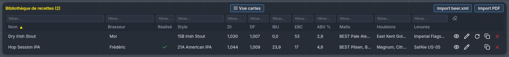
- « Sauvegarder » dans la Conception enregistre la recette en cours dans la bibliothèque (mise à jour si elle y est déjà).
- Crayon : ouvre la recette dans la Conception. Croix : la supprime (après confirmation).
- Colonnes : nom, brasseur, réalisé, style, DI, DF, IBU, EBC, ABV, malts, houblons, levures ; une ligne de filtres et le tri par clic sur l’en-tête. Le bouton gomme efface tous les filtres.
- Vue cartes : affichage en fiches avec la couleur de la bière.
- Numéro de brassin :
année#rang(ex.2026#12), rang par date de brassage parmi les recettes de l’année, recettes importées exclues. Il apparaît sur les étiquettes et dans le HTML. - Import beer.xml (BeerXML 1.0) et Import PDF (impression d’une recette Brewfather, export PDF BeerSmith) : les recettes importées sont en lecture seule (à copier pour les modifier). Import beer.xml : un ingrédient absent de la base y est ajouté avec les données du fichier. Import PDF : une boîte « Correspondance des ingrédients » propose de relier chaque ingrédient inconnu à un ingrédient de la base ; sinon il reste en simple texte dans la recette.
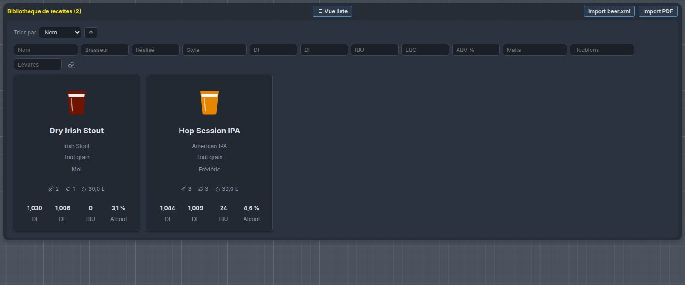
Bases d’ingrédients
Écrans Malts, Houblons, Levures, Eaux, Styles, Ingrédients, Consommables : la base de référence utilisée par les recettes.
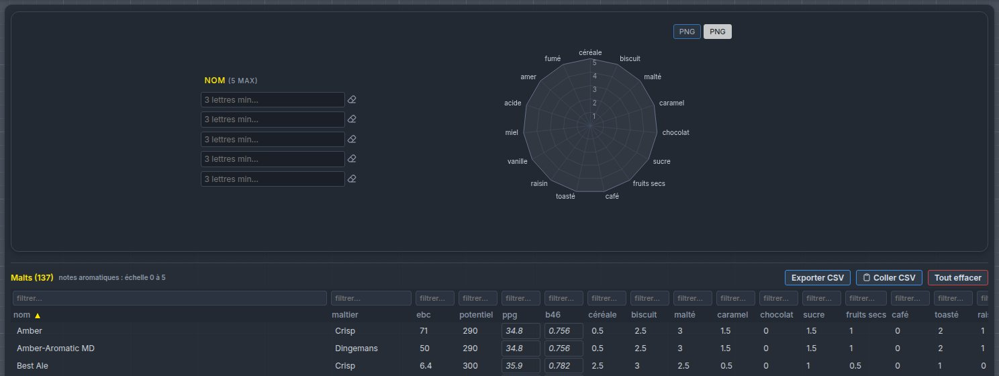
- Une ligne de filtres sous les en-têtes (voir Filtres ci-dessous) ; tri par clic sur l’en-tête ; pagination par 15 lignes.
- En fin de ligne : crayon (modifier la ligne, en lecture seule sinon), dupliquer, caddie (liste de courses), croix (supprimer). Le ＋ de l’en-tête ajoute une ligne.
- Exporter CSV, Coller CSV (importer des lignes depuis un tableur) et Tout effacer.
- Notes aromatiques sur une échelle de 0 à 5 ; malts, houblons et levures se comparent sur un radar (jusqu’à 5 noms).
- Styles : les 123 styles BJCP 2021 avec description, plages (IBU, SRM, OG, FG, ABV) et profils d’eau ; ＋ Style pour en ajouter un. Les styles « spéciaux » sans plages (DI, DF, IBU, SRM, ABV : 21B, 27, 28 à 34) reçoivent, pour chaque plage manquante, la valeur la plus basse et la plus haute de tous les styles, pour que le bilan et le calcul restent cohérents.
Filtres
Chaque colonne a son champ de filtre, juste sous l’en-tête. Plusieurs filtres se cumulent : une ligne n’est affichée que si elle les respecte tous. Le bouton gomme, en bout de ligne, efface tous les filtres et revient au tri par nom. Sur une colonne de nombres (EBC, alpha, atténuation, prix, stock, ions, plages des styles…), le filtre accepte une expression mathématique ; x désigne la valeur de la colonne :
| Expression | Lignes affichées |
|---|---|
pils | colonne de texte : la valeur contient « pils » (sans tenir compte des majuscules ni des accents) |
3 ou =3 | x = 3 ; « 3 » est réécrit « =3 » en quittant le champ |
!=3 ou <>3 | x ≠ 3 |
<3 | x < 3 |
<=3 | x ≤ 3 |
>4 | x > 4 |
>=4 | x ≥ 4 |
[2;4] | 2 ≤ x ≤ 4 (bornes incluses) |
]2;4[ | 2 < x < 4 (bornes exclues) |
]2;4] | 2 < x ≤ 4 |
[2;4[ | 2 ≤ x < 4 |
2;4 | x = 2 ou x = 4 (liste : autant de valeurs que voulu, ex. 2;4;6) |
- La virgule ou le point servent de séparateur décimal (
>=3,5=>=3.5) ; les nombres négatifs sont acceptés (>-1) et les espaces ignorés. - Une ligne dont la case est vide est écartée par une expression numérique.
- Colonne stock :
1= en stock,0= hors stock. - Sur une colonne de texte, ou tant que l’expression est incomplète (ex.
2;), la saisie est cherchée comme du texte. L’infobulle des champs de filtre numériques rappelle la syntaxe.
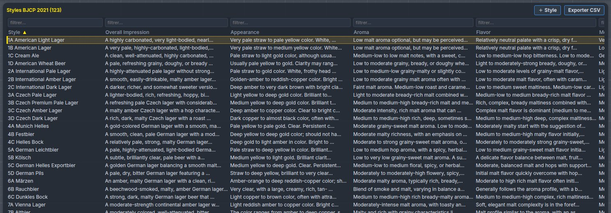
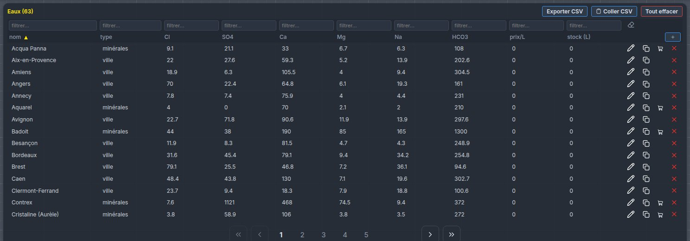
Rendu HTML
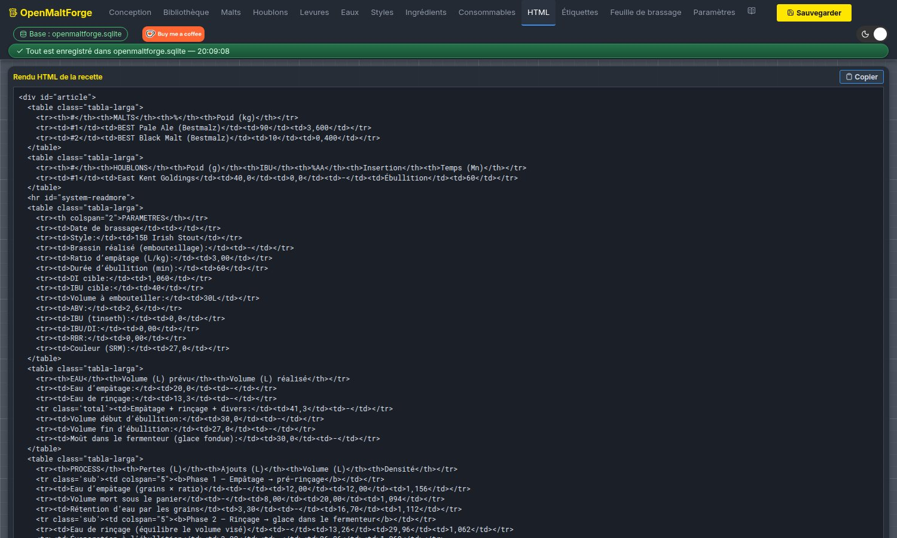
Le tableau EAU reprend les « Quantités d’eau » de la Conception (eau d’empâtage, eau de rinçage, total empâtage + rinçage + divers) ; les PARAMETRES donnent aussi la durée d’ébullition (ni numéro de brassin ni électricité dans ce rendu), et le tableau PROCESS suit les phases du Process.
Étiquettes
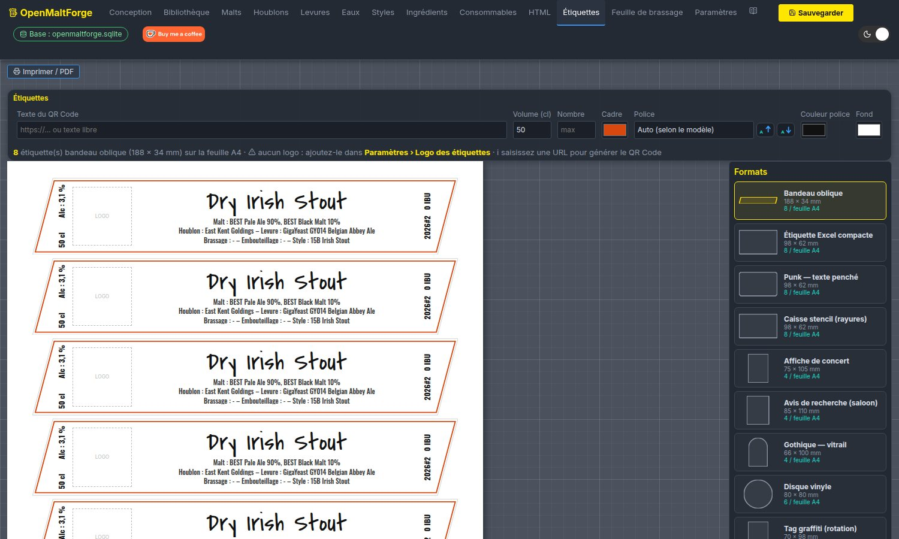
- Formats (colonne de droite) : bandeaux, étiquettes rectangulaires, rondes, capsules, collerettes, modèles illustrés (affiche de concert, saloon, vinyle, reggae, romantique, soul, punk…), avec leurs dimensions et le nombre par feuille A4.
- Texte du QR Code (une adresse ou un texte libre), Volume (cl), Nombre d’étiquettes, couleurs du cadre, de la police et du fond.
- Police : liste déroulante où chaque police est affichée dans son propre style ; tapez quelques lettres pour filtrer, flèches et Entrée pour choisir. Les boutons A↑ / A↓ agrandissent ou réduisent le texte.
- Le logo des étiquettes se choisit dans Paramètres › Logo des étiquettes. Le numéro de brassin est calculé automatiquement.
- Imprimer / PDF : impression de la planche (ou enregistrement en PDF).
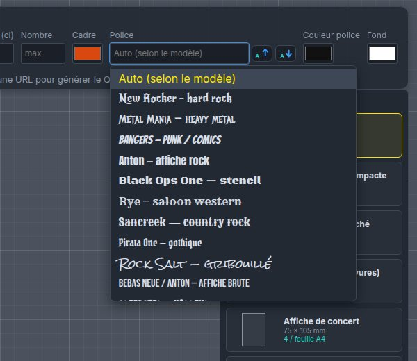
Feuille de brassage
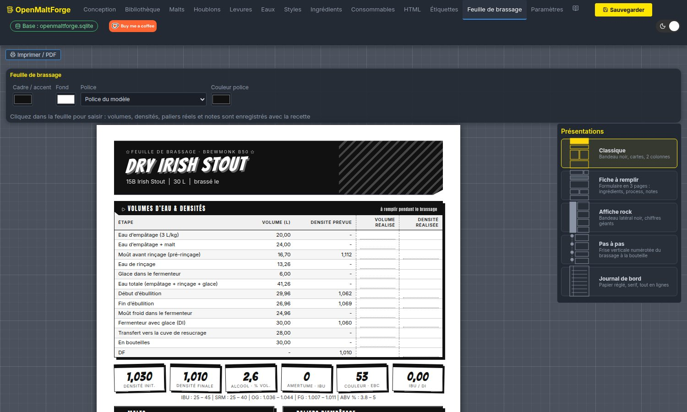
- Cinq présentations : Classique, Fiche à remplir, Affiche rock, Pas à pas, Journal de bord.
- Couleurs du cadre / accent, du fond et de la police ; choix de la police (chaque nom affiché dans sa police).
- On peut saisir directement dans la feuille : volumes, densités et paliers réellement obtenus, et des notes de brassage ; tout est enregistré avec la recette.
- Imprimer / PDF.
Paramètres
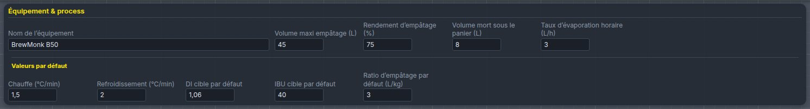
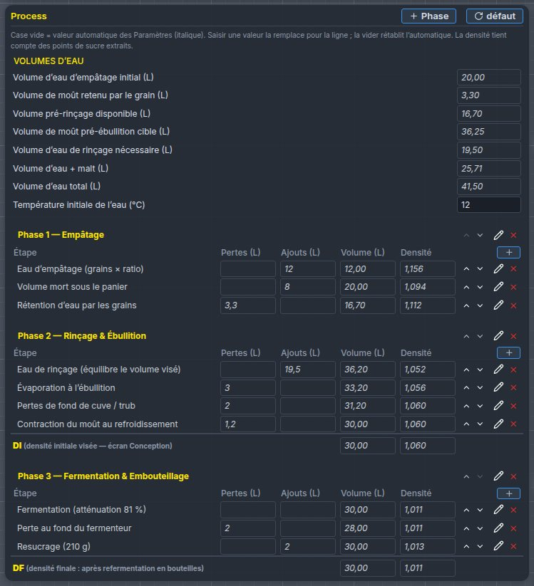
- Équipement & process : nom de l’équipement, volume maxi empâtage (un champ rouge et un avertissement le signalent quand l’eau d’empâtage + le malt l’atteignent), rendement d’empâtage, volume mort sous le panier et taux d’évaporation horaire ; Valeurs par défaut : chauffe, refroidissement, DI et IBU cibles, ratio d’empâtage (appliqués à chaque nouvelle recette ; la durée d’ébullition se règle dans les paliers de la Conception). Le volume à embouteiller et le ratio d’empâtage de la recette se saisissent dans la Conception.
- Process : le process en phases (par défaut : empâtage → pré-rinçage, rinçage → glace, embouteillage), étape par étape, avec le volume et la densité calculés à chaque ligne. ＋ Phase ajoute une phase, ＋ (en tête de colonnes) ajoute une étape à la phase ; le crayon au bout de chaque ligne rend modifiables le nom de la phase ou le nom, les pertes et les ajouts de l’étape (OK ou Entrée pour valider) ; ▲ ▼ déplacent une étape (au bord d’une phase, elle passe dans la phase voisine) ou une phase ; ✕ supprime (une phase qui contient des étapes demande confirmation). Une case vide reprend la valeur automatique des Paramètres. La ligne DI suit la phase de la glace, la ligne DF termine la dernière phase. Avant la contraction du moût au refroidissement, les volumes sont mesurés à chaud : la densité (lue sur un échantillon refroidi) est calculée sur le volume froid équivalent, si bien que la contraction ne change pas la densité. ↺ défaut revient au process d’origine. Les Ajouts des étapes dont le nom contient « glace » donnent la quantité de glace utilisée pour calculer la Température du moût dans le fermenteur en fin de transfert (Paramètres de brassage) ; s’il y en a plusieurs, leurs ajouts s’additionnent. Le volume d’eau total additionne tous les « Ajouts » du Process (empâtage, volume mort, rinçage, glace, resucrage, ajouts personnalisés). La température initiale de l’eau (utilisée pour l’électricité) est la dernière ligne du tableau des volumes, sous le Process.
- Paramètres de brassage : une seule liste, dans cet ordre : volume maxi du fermenteur inox, perte au fond du fermenteur, occupation du malt sec concassé, rétention d’eau par les grains potentiel du grain (calculé d’après les malts, en lecture seule) et absorption des drêches (L/kg) ; une case vide prend la valeur automatique. Les autres valeurs se règlent là où elles servent : Conception (grains, ratio, volume à embouteiller, durée d’ébullition), Process (trub, contraction, resucrage, glace) et Équipement & process.
- Besoins en électricité : puissance et durée de chaque poste, kWh et coût.
- Coefficients d’utilisation des houblons par usage, appliqués aux IBU de Tinseth.
- Logo des étiquettes : choisir une image.
- Polices de caractères : polices Google Fonts stockées dans la base ; Importer (plusieurs fichiers à la fois), filtre, aperçu au survol. Les polices de l’interface, marquées d’un cadenas, ne peuvent pas être supprimées ; à la suppression d’une autre police, une fenêtre propose une police de remplacement.
- Calculs › Température : température d’un mélange de liquide froid et de liquide chaud, chacun avec son volume (L) et sa température (°C). Par défaut, le liquide froid est la glace du Process (−16 °C) et le liquide chaud le moût transféré (95 °C) : le résultat est la température du moût dans le fermenteur en fin de transfert. Un liquide froid à 0 °C ou moins est traité comme de la glace (il faut la fondre puis la réchauffer). Une case vide reprend la valeur par défaut. Le résultat s’affiche en jaune, comme le total des besoins en électricité. Les sections Calculs et Contactez-moi se trouvent sous Polices de caractères.
- Contactez-moi : l’adresse du développeur,
openmaltforge@pm.me(clic = nouveau message dans votre messagerie, Copier = adresse dans le presse-papiers), pour une question, une idée ou un problème. - Unités : section en préparation (désactivée).
- À rechercher (visible seulement si nécessaire) : ingrédients rencontrés lors d’un import (PDF Brewfather / BeerSmith) et absents de la base. Chaque ingrédient est une pastille (sa croix le retire ; Tout effacer vide la liste) ; un ingrédient disparaît de lui-même dès qu’il existe dans la base. Génération du prompt : le texte affiché est construit automatiquement, dans la langue de l’interface (il est régénéré quand vous changez de langue) :
- une introduction qui présente la mission (rechercher les données de chaque ingrédient sur Internet et produire des fichiers CSV) ;
- une rubrique par catégorie concernée (malts, houblons, levures, ingrédients divers), avec le nom du fichier CSV attendu (
malts_nouveaux.csv,houblons_nouveaux.csv,levures_nouvelles.csv,ingredients_nouveaux.csv) et la liste des ingrédients, chacun avec les données trouvées dans la recette importée et les recettes où il apparaît ; - les règles communes des CSV (encodage UTF-8, séparateur point-virgule, virgule décimale…) ;
- pour chaque fichier : les en-têtes exacts des colonnes de votre base, la signification de chaque colonne (unités, échelles des arômes de 0 à 5…) et une ligne d’exemple prise dans votre base pour montrer le format.
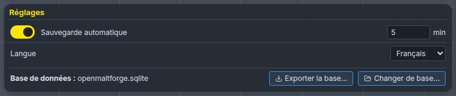
- Sauvegarde automatique : activée ou non, et délai en minutes (0 = après chaque modification). Désactivée, seul le bouton « Sauvegarder » écrit dans la base.
- Langue de l’interface : français, anglais, espagnol, italien, portugais. Toute l’interface est traduite, y compris le prompt de la section « À rechercher » et cette documentation (dans les autres langues que le français, les captures montrent l’interface en anglais).
- Exporter la base… : télécharge une copie
AAAAMMJJ_openmaltforge.sqlitede l’état affiché. - Changer de base… : remplace la base par le contenu d’un autre fichier
.sqlite; le fichier est vérifié et mis à niveau, et une copie de la base actuelle est conservée danssauvegardes/.
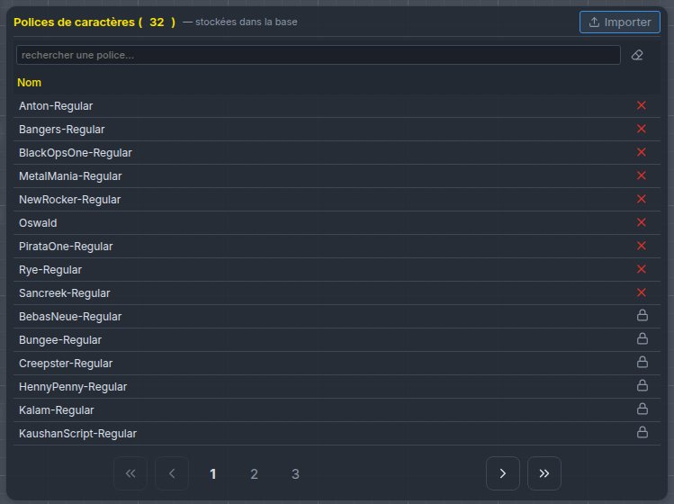
Données et sauvegardes
- Base unique :
~/OpenMaltForge/openmaltforge.sqlite(un seul fichier, copiable à tout moment). - Avant toute mise à niveau de la structure de la base, et avant un changement de base, une copie est faite dans
~/OpenMaltForge/sauvegardes/. - Une base créée par une version plus récente d’OpenMaltForge est refusée (installez la dernière version).
- Les anciennes bases (BrewCraft 1.x à 4.x) sont reconnues et converties ; la base d’OpenBrew 5.x (
~/OpenBrew/openbrew.sqlite), sinon celle de BrewCraft 4.x (~/BrewCraft/brewcraft.sqlite), est reprise au premier lancement d’OpenMaltForge.
Astuces
- Champs calculés (fond plus sombre, en lecture seule) : survolez-les une demi-seconde pour voir comment la valeur est calculée.
- Échap ferme les boîtes de dialogue et les agrandissements ; Entrée valide.
- Un clic dans un champ sélectionne son contenu : la saisie le remplace directement.
- Les formules (=) fonctionnent partout, y compris dans les bases et les paramètres.
OpenMaltForge — application sous licence GNU GPL v3. Icônes Lucide (licence ISC).